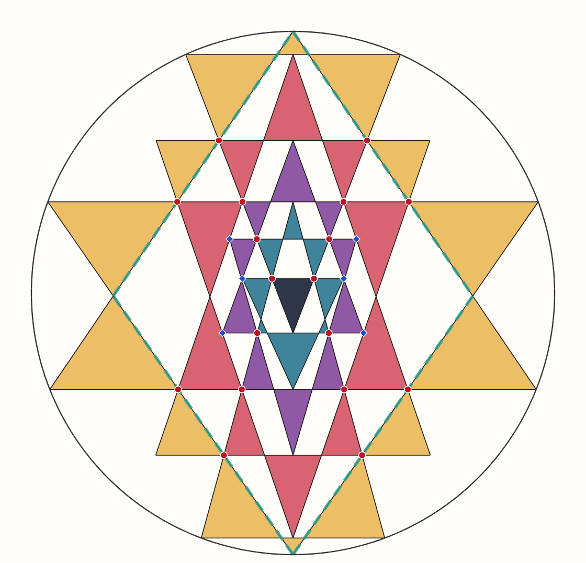
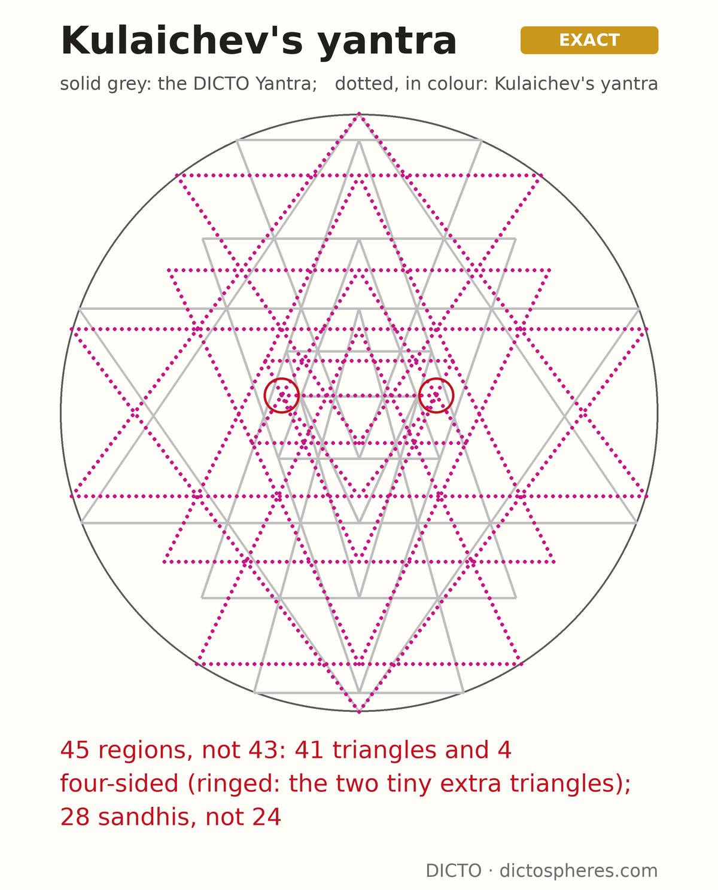

DICTO (artist, Osaka, Japan) · contact@dictospheres.com · https://dictospheres.com · ORCID 0009-0001-2620-2036
Version 1 · 20 November 2026 · Licence CC BY-SA 4.0 · Every statement here is taken from the paper named on its card and is claimed only as that paper states it.
Computation, proofs, verification and drafting with Claude (Anthropic).
Draft for DICTO's read, 20 November 2026; delete this box at publication. The title is a placeholder; the name is DICTO's to choose.
DICTO is a sculptor in Osaka. He trained as a stonemason, a Buddhist statue wood-carver and a restoration technician, and he now builds from recycled PET bottles. The shapes he builds lead into questions of geometry, and he publishes the answers as numbered papers.
The six results below are proved. Four of them carry proofs machine-checked in the proof assistant Lean 4 with the Mathlib library: two of these are registered on Palomar, a public registry of formalised mathematics, and a third has been submitted to it. The others are proved by exact, certified computation or by hand. Every paper is open access on Zenodo under a DICTO DOI, with its scripts, exact checks and data.
Each card gives the theorem in one sentence, why it may interest a mathematician, how it is proved, whose work it builds on, and where to find it. "Not found in the sources checked" means exactly that: each paper lists the sources it checked. Where DICTO's name for a known shape is used, an asterisk leads to its regular name and its discoverer.
Result
How it is proved
1
The Dehn Canon: Hilbert's third problem, machine-checked from the solids up (#113)
Lean, registered on Palomar
2
The Śrī Yantra: the DICTO Yantra and Kulaichev's yantra are each the only one of their kind (#103)
certified computation; Kulaichev's case also in Lean, registered on Palomar
3
Grünbaum's zone question at k = 10 (#115)
exact computation; Lean, submitted to Palomar
4
Fair dice are Alexandrov's problem: the 149 Aequi and the 1083 Seraphim (#112, #111)
proof by hand; exact computation
5
The scutoid law: swaps per birth = ⟨F⟩/2 − 3 (#114)
proof by hand
6
The Loop Equality on every close-packed stacking (#102)
proof by hand; Lean
1 · The Dehn Canon: Hilbert's third problem, machine-checked
Paper #113, The Dehn Canon: Hilbert's Third Problem, Machine-Checked
From #113, Figure 6. The canon. Left, the solids proved to have Dehn invariant zero; right, those proved nonzero, in two families by the angles their invariants use. Each solid line is a pair proved not scissors congruent in any sizes; the arrow at the top: no nonzero solid is scissors congruent to a zero one. The last zero box (the nine most regular space-fillers) is zero by hand. Colours: the app colours of the solids; the rest neutral.
Theorem. In Lean 4 with Mathlib, the Dehn invariant is defined from a solid as a point set and proved to be kept by every dissection into convex polytopes and to equal Dehn's classical edge sum; on this base, Dehn's theorem, Hilbert's question in his own words, and the fact that every two different nonzero solids of a canon of named solids are not scissors congruent, in any sizes, are proved.
Why it matters
Dehn answered Hilbert's third problem in 1901: volume does not decide whether one solid can be cut into another. Earlier formal proofs work in abstract models of edges and angles; FormalBook's chapter 10, a Lean proof by the route of Proofs from THE BOOK, says it does not bridge arbitrary geometric decompositions to its model. Here the angle at an edge is read from the point set as a share of a disc, and the lengths are Hausdorff lengths, so no list of edges is ever given as input: the theorem is about solids as sets, and the bridge holds for every convex dissection. Stated this way, the invariant and the bridge can serve as a base in Lean for Sydler's converse, Jessen's four-dimensional work and valuations in Mathlib.
How it is proved
In Lean 4 with Mathlib: 43 files, 15,880 lines, no sorry, only the three standard axioms (propext, Classical.choice, Quot.sound). Five statements (the bridge, its form for finite unions, Dehn's theorem, Hilbert's question and the edge sum) are registered on Palomar, where its comparator checked them with three independent kernels (con-ron, NanoDa and Lean's own). The zero invariant of the nine most regular space-fillers is proved by hand.
Credits
Dehn (1901) for the theorem and the invariant; Hilbert (1900) for the question; Jessen for the tensor form; Sydler (1965), quoted, not used; the Dehn invariants of the Platonic solids and the independence of the angles on paper: Conway, Radin and Sadun (1999); CLEO* and AXE* as golden tetrahedra, with their invariants: Ogievetsky and Papadopolos; the pair of tetrahedra on one base: Aigner and Ziegler; the edge argument: Hartshorne §27; additivity over dissections: Hadwiger, Groemer; Niven's theorem in Mathlib (Meiburg, Broshi); FormalBook chapter 10 and its Minkowski–Weyl theorem. Not found in the sources checked: a machine-checked proof of Dehn's theorem with the invariant defined from the solid as a set and a proved bridge for every convex dissection; the invariant of DICTO's FUJI in any form.
* CLEO is the Mosseri–Sadoc tile t4 and AXE the tile t6, each scaled by 1/φ (Mosseri and Sadoc, 1982). Rediscovered by DICTO as CLEO and AXE.
2 · The Śrī Yantra: two yantras, each the only one of its kind
Paper #103, The DICTO Yantra: Unique and Traditional, Exact but Not Constructible


From #103. Left, Figure 1: the DICTO Yantra; both small triangles touch the circle, the bindu is centred, 43 triangles (shaded ring by ring), 18 marmas (red). Right, Figure 4: Kulaichev's yantra, dotted, over the DICTO Yantra in grey; ringed in red, the two tiny extra triangles that bring its count to 45 regions.
Theorem. Under Huet's conditions, Kulaichev's four conditions and admissibility there is exactly one Śrī Yantra, Kulaichev's own, and it is not the traditional form (45 regions, 41 of them triangles, and 28 sandhis); with DICTO's Cleo-Antonius condition uv = 2/φ³ in place of equal great triangles there is again exactly one, the DICTO Yantra, and it has the traditional form (43 triangles, 18 marmas, 24 sandhis); their slopes have minimal polynomials of degree 348 and 160, so neither yantra can be drawn exactly with straightedge and compass.
Why it matters
A Śrī Yantra is nine triangles in a circle whose sides must meet three at a time at 18 points; four free parameters remain (Huet), and Kulaichev, Rao and Pustynski fixed one figure by four more conditions. Kulaichev asked in 1984 whether his equations "may or may not possess other real roots"; Chiodo (2021) calls the question still open; Pustynski argued for uniqueness from residual plots. The answer is a proof. Chiodo proved the four-parameter family constructible with straightedge and compass from its parameters; the rigid yantras are not, by Wantzel's theorem, since 160 and 348 are not powers of 2. The golden-ratio drawings of Bolton and Macleod (1977) and Fonseca (1986) meet only nearly; here the golden ratio enters as one exact equation, the product of the slopes of DICTO's pair of solids, the Cleo-Icos* and its space-filling partner Antonius.
How it is proved
Both uniqueness theorems: computer-assisted proofs by certified computation (exact elimination, real roots certified by three independent isolators, ball arithmetic and the Krawczyk test), each with an independent second census. The minimal polynomials are certified (irreducibility and real-root isolation). Kulaichev's case is also proved in Lean 4 with Mathlib by a separate, kernel-checked route, registered on Palomar.
Credits
Kulaichev (1984) for the yantra and the question; Huet for the four-parameter model and its conditions, in Chiodo's form; Chiodo (2021) for the straightedge-and-compass construction of the family; Rao (1998) and Pustynski (2014) for the rigid yantra to 15 figures and the remark on "two additional tiny triangles"; Kavi Mahesh (2023); Chapati and Chapati (2026), who counted the traditional 43 by another rule; Bolton and Macleod (1977) and Fonseca (1986) for the golden-ratio drawings; Wantzel (1837). Not found in the sources checked: the exact minimal polynomials, and both uniqueness proofs.
* The icosahedron face pyramid (classical; Mackay, 1962). Rediscovered by DICTO as the Cleo-Icos.
3 · Grünbaum's zone question at k = 10
Paper #115, Ten Faces in Every Zone: Grünbaum's Question at k = 10
From #115, Figure 1. The rhombic triacontahedron T, and three solids made from it by removing four oblate golden rhombohedra (see-through, pulled out of their dimples): GET A, GET B and the indented rhombic triacontahedron of Hall and Inchbald. In each, the four dimpled corners lie on one cube inscribed in T. Colours are labels only.
Theorem. GET A* and GET B, the rhombic triacontahedron less four oblate golden rhombohedra, are polyhedra of Grünbaum's spherical type with 30 congruent golden rhombic faces whose six zones each have exactly 10 faces, and their translates by one lattice fill space face to face; so the answer to Grünbaum's question for k = 10 is yes.
Why it matters
Grünbaum asked in 2010: "Given an even integer k ≥ 4, is there a rhombic monohedral parallelohedron such that every zone has exactly k faces? … No information is available for any k ≥ 10." The cube gives 4, the rhombic dodecahedra 6 and his doubly indented rhombic icosahedra 8; no convex example exists beyond 6 (Venkov, McMullen). GET A and GET B are not congruent, even as mirror images, yet share one lattice and the volume 20 + 32φ. Being indentations of the triacontahedron, they also show that his tentative remark that "none of the other isozonohedra obtainable by indentation of F or T seem to be parallelohedra" does not hold. Within the surfaces whose zones cross exactly twice, every face-to-face lattice tiler built from golden rhombohedra consists of 16 golden rhombohedra of 16 different types, the four missing types oblate.
How it is proved
Exact computation in ℤ[φ], no floating point: the surface is a sphere with 30 congruent golden rhombi and six zones of 10, its volume equals the covolume of the lattice, and no translate within reach overlaps it, so the translates tile. For GET B the whole theorem is also proved in Lean 4 with Mathlib (23 modules, 3,806 lines, no sorry, the three standard axioms), accepted by Palomar's comparator and by the independent kernels NanoDa and con-ron; the Lean proof has been submitted to Palomar.
Credits
The question, the solids D1 and D2 and the indentation remark: Grünbaum (2010); the Bilinski dodecahedron: Bilinski (1960); belts of convex parallelohedra: Venkov (1954), McMullen (1980); the golden rhombohedra: Ammann (1976), Kramer and Neri (1984). The first public k = 10 solid of this kind is D. Hall's indented ("dimpled") rhombic triacontahedron (2016), the same solid as G. Inchbald's; GET A was first shown in J. Kostick's vZome array (2022); neither gives zone counts, a proof or a link to Grünbaum. Not found in the sources checked: GET B, and the proof for both solids.
Links
DICTO DOI: 10.5281/zenodo.24389006 · Lean proof of GET B submitted to Palomar
* First shown by J. Kostick in a vZome array ("concavo-convex triacon array", 3 April 2022), without proof; rediscovered by DICTO as GET A. GET (Grünbaum–Escher Triacontahedron) is DICTO's name.
4 · Fair dice are Alexandrov's problem: the Aequi and the Seraphim
Papers #112, Fair Dice — The Aequi, and #111, Equanimity
From #111, Figure 1. The twelve fair dice of the axis lines, each face with chance 1/N in the solid-angle model. Slate: the faces of the family with fewer faces; sand: the other family. Colours are labels only.
Theorem. A set of N face directions carries a die that is fair in the solid-angle model exactly when it satisfies Alexandrov's condition for equal masses, and the die is then unique up to scale (Theorem A of #112); with this rule the fair dice on the axes of a cube and an icosahedron are counted exactly: 149 Aequi with at least two kinds of face under the seven groups of these two frames, and 1083 more, the Seraphim, using both placements of the icosahedron.
Why it matters
Diaconis and Keller showed that a die can be fair by continuity, and Rawlins designs dice whose faces subtend equal solid angles; with many kinds of face the possibilities multiply without end. Turned inside out, a face's solid angle is the curvature at the matching corner of the polar body, so a fair die is Alexandrov's 1942 problem of prescribing curvature, with equal masses: existence and uniqueness follow, the condition becomes a finite test, and it always holds when the face directions come in opposite pairs. A list of dice becomes a count. Earlier, #111 found the fair member on each of twelve lines of solids cut from two Platonic or Catalan solids; for the 14-face die the cut is exact, μ = 1 + √(2 tan(π/14) tan(2π/7)), with inradius over circumradius cot(2π/7).
How it is proved
Theorem A: proof by hand from Alexandrov's theorem, in the statements of Oliker and Bertrand. The 149: enumeration, uniqueness and symmetry exact, existence exact by Theorem A's corollaries, every die computed to 80 digits. The 1083: complete in the same sense, existence exact, uniqueness by Theorem A; the counts 31 (symmetry O) and 53 (symmetry Oh) among them follow exactly from Theorem A. #111: the 14-face die exact, the hidden angles of ten dice proved by hand from Girard's theorem.
Credits
Alexandrov (1942), Oliker (2007) and Bertrand (2016) for the curvature problem; Diaconis and Keller (1989) for fairness by symmetry and by continuity; Rawlins for the equal-solid-angle rule; Van Oosterom and Strackee for the solid angle of a triangle; Girard's theorem. The names Aequus (plural Aequi) and Seraph (plural Seraphim) are DICTO's. Not found in the sources checked: the reading of a fair die as Alexandrov's problem, the counts and the catalogues.
From #114, Figure 5. The law at a glance. Left: a Poisson–Voronoi tessellation and the bcc tessellation, each clipped to a cube with a corner cut away (colours are labels only). Right: swaps per birth in sweeps of random simple 4-polytopes, rising towards 24π²/35 − 2, and the space-time simulation (amber); the dashed line is the bcc value 4.
Theorem. If an open region of space-time is filled by a simple face-to-face complex of convex cells and swept by planes in any generic direction, then each cell is born at its lowest corner and dies at its highest, and per unit volume births = deaths = cells and swaps = corners − 2 × cells, so swaps per birth = ⟨F⟩/2 − 3, where ⟨F⟩ is the mean number of walls of a cell.
Why it matters
In a moving flat tiling Euler's formula fixes the net number of cells but leaves the number of neighbour swaps free. Stacked in time, every cell is a tube, and a cell that swaps neighbours is a scutoid. If the tubes are convex, the number of swaps per birth is fixed by how many walls a tube has, the same whichever direction is taken as time: 4 for the bcc tessellation, 24π²/35 − 2 = 4.7677 for Poisson–Voronoi (simulated 4.7669 ± 0.0006). Without convexity the counts can depend on the direction, and on the Sun's granulation they do. This carries DICTO's reading of the scutoid tissue as a slice of a four-dimensional polytope (#104, where the counts are the h-vector) from the closed polytope to open space-time.
How it is proved
Proof by hand, from the corners of the complex: each corner of a simple complex shows a birth, a swap or a death according to how many of its four edges lie below the plane. Exact examples: the swept 120-cell (116 / 366 / 116), truncated 120-cell and bitruncated 600-cell; bcc; Poisson–Voronoi from Meijering's mean.
Credits
Gómez-Gálvez et al. (2018) for scutoids and the name; Mughal et al. (2018) for scutoids in a froth; McMullen's line shellings and the h-vector; Banchoff's critical points; Meijering (1953) and Møller (1989) for the Poisson–Voronoi mean; Lautensack and Zuyev (2008) for Laguerre sections; Mason et al. (2015) for the mean of grain growth. Not found in the sources checked: the theorem and its reading of the bcc and Poisson–Voronoi values as swap counts.
6 · The Loop Equality on every close-packed stacking
Paper #102, Every Site Hears the Same: The Loop Equality Is a Theorem
From #102, Figure 1. The proof in two pictures. (a) From an atom, the three bonds to the next bilayer form a triangle (gold) or its point mirror (violet); the stacking decides which. (b) A closed walk crosses each bond layer as often up as down, so it counts the same on every stacking.
Theorem. On the tetrahedral network of every close-packed stacking, periodic or not, at every site and for every length, the number of closed non-backtracking loops equals diamond's: 24, 48, 480, 3432, … for lengths 6, 8, 10, 12 (OEIS A400949).
Why it matters
Diamond, lonsdaleite and the other stackings differ from the third shell of neighbours on, and in 4H and 6H not all sites are alike; yet every site has the same number of loops of every length. The closed-walk part was known for periodic polytypes (Nagle; Thorpe); here the statement is for non-backtracking loops, at every single site, and for aperiodic stackings too, with the same for the pyrochlore network of every stacking and for the sphere packings. Where the stacking does show: self-avoiding polygons first differ at length 18, by an exact local law. The equality surfaced in DICTO's study of stackings (#74), which stated it as a conjecture.
How it is proved
Proof by hand: Fourier analysis over the layers, then the Ihara–Bass recursion. Theorem 1 and its explicit count are also proved in Lean 4 with Mathlib, with the closed walks at every atom and the aperiodic Fibonacci stacking: 11 modules, 2,372 lines, no sorry, only the three standard axioms. Exact integer counts agree at all 686 sites tested on 42 stackings.
Credits
Nagle (1966) and Thorpe (1972) for the closed walks; Guido, Isola and Lapidus (2008) for the Bass formula on periodic graphs; Ihara, Hashimoto, Bass; the Domb numbers (OEIS A002895) and P. Bala's chain formula; Betteridge (1981) and He, Wilson and Ganesh (2024) for the same mechanism in band structures; Herrero and Ramírez (2013) and Herrero (2014) for ice; Guttmann and Jensen for diamond's polygons. No earlier statement was found that non-backtracking loop counts agree across stackings.